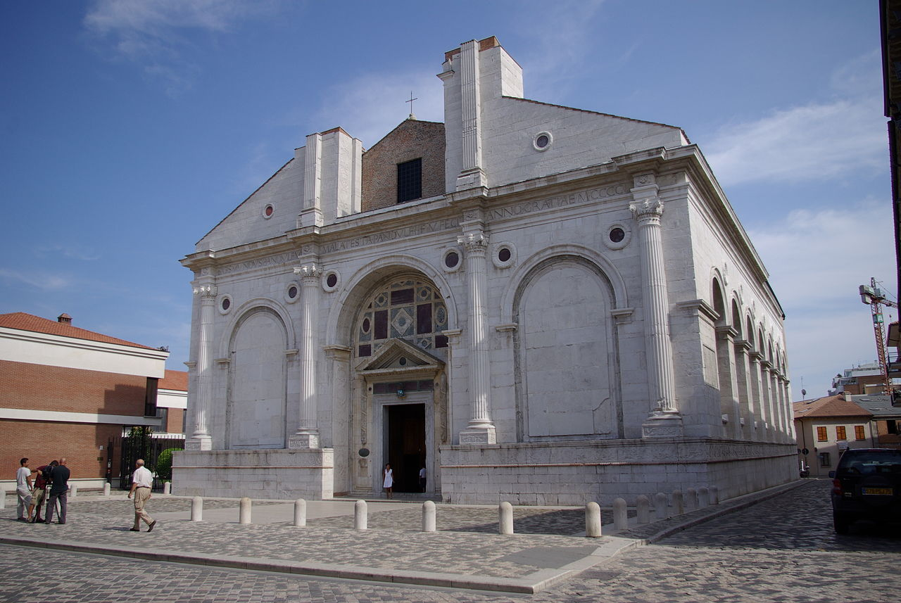
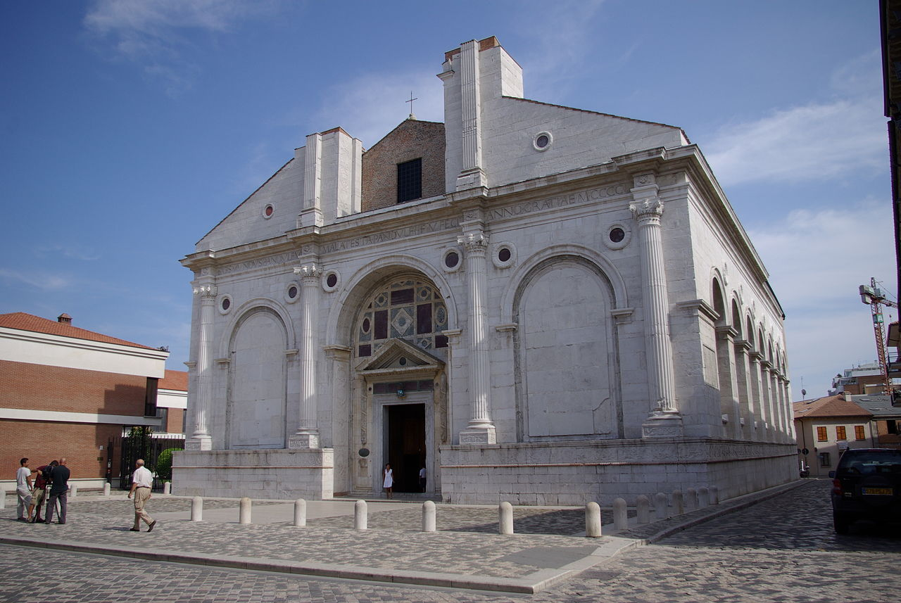

Le origini di Rimini
Rimini è una delle città più antiche d'Italia. Fondata nel 268 a.C., ha visto il passaggio di Romani, imperatori e grandi artisti rinascimentali.
Rimini è una delle città più antiche d'Italia. Fondata nel 268 a.C., ha visto il passaggio di Romani, imperatori e grandi artisti rinascimentali.
La città è famosa per essere la patria del regista Federico Fellini e per i suoi 15 km di spiagge, visitate da milioni di turisti ogni anno.
Durante l'anno Rimini ospita numerosi eventi, tra cui la Notte Rosa, fiere internazionali e festival dedicati al cinema e alla cultura.
| Attrazione | Tipo | Orario |
|---|---|---|
| Arco di Augusto | Monumento | Sempre aperto |
| Ponte di Tiberio | Storico | Sempre aperto |
| Museo della Città | Museo | 10:00 - 18:00 |
Approfondisci la storia di Rimini
 
